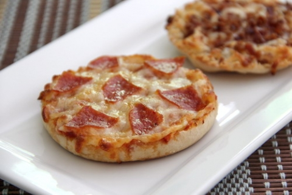

My Favorite Recipe
English Muffin Mini Pizza's
Ingredients
- English Muffin
- Pizza Sauce
- Shredded Mozzarella
- Pepperoni Slices
- Dried Oregano
Instructions
- Break apart your english muffin and toast both sides
- Spread pizza sauce over both halves of yourr english muffins
- Add Mozzarella cheese over the sauce on each english muffin halve
- Add a singular pepperoni to each english muffic, over the mozarella
- Sprinkle oregano ovr each english muffin
- Microwave for 50 seconds
- Let cool for 2 minutes and enjoy